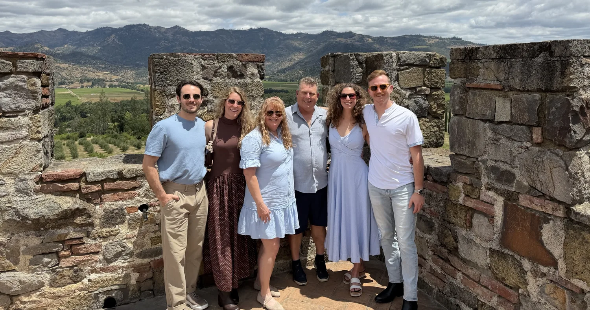
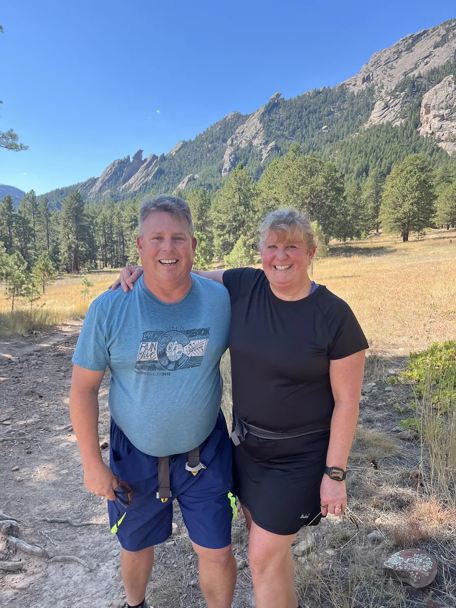

A Free coaching pilot: build software with AI
If you’re a student or young adult who’s curious about building software with AI, I’d love to sit down with you and help you make a real, working app, site or tool. You don’t need any experience. A rough idea is plenty.
I’m Todd Beetcher. Coaching is a new chapter for me, and I’m trying it with a few people to find out whether I love it as much as I expect to. These sessions are free.
Reading this for someone else? A parent, relative, professor or friend is welcome to start the conversation. Just tell me a little about them.
Side by side
I’ll coach you, elbow to elbow, as you turn your idea into working software. We’ll set up your build environment and work through the decisions together.
I won’t just make it for you, and I won’t leave you to figure it out alone. You’ll be building, and learning as you go.
Why I’m doing this
These abilities arrived quickly for me, and I’m excited to share what I’ve learned.

So for a few early experiences, I’m donating my time. There’s no fee for my time, and if any tool or hosting costs come up, we’ll talk before anything is bought. I get to learn whether I can pass this on and whether I enjoy it, before I decide whether to do anything more.
It’s a personal experiment, not a business and not an open-ended offer.
A little about me
I began as a programmer, working in low-level systems and chip design, then spent decades in technology and business. Now AI has put me back at the keyboard, building.
Talking to your AI assistant well is the magic. But it works best when you also understand how the whole system fits together: the screen, the logic behind it, the data, and where it all runs. That’s the difference from “vibe coding,” where you type requests and hope. It makes you more effective, and likely more valuable in the industry.
That understanding took me 30 years, and I want to share it.
One recent Saturday I kicked off a seven-stage build plan and went for a walk. By the time I got back, all seven stages were done.
A few hours of reviewing and fine-tuning later, it was working by dinner: about 14,000 lines of code and hundreds of tests.
The plan, the decisions and the review were mine. That’s the part I want to help you build.
Boulder since 1997
I’ve lived in Boulder since 1997, raising a family. Both of my kids went through Fairview High School and on to college, in sports and in the classroom. Brittney swam at the University at Buffalo, and Savannah played soccer at Central Michigan.
I’ve been through the school years and the college years, and I know how they feel for a family. I also think a lot about the future we’re handing the next generation, my own family’s included.
I want to help. This is my chance to find out whether I can really pass along my passion and what I’ve learned.
What could we build?
We’ll start with whatever interests you.
It can go well beyond a web page. For example, a sign-up screen connected to logic behind it, a database, and automatic notifications, so you see how the pieces fit together.
That can mean setting up your own cloud account (GCP), calling AI endpoints from your own code, connecting Claude directly to your repo, and kicking off builds from your phone while you’re out for a walk. I’ve done all of that in the last month, and I hardly open VS Code anymore.
We’ll decide together how far to take it. A working prototype is a great finish line.
Working together
Along the way you’ll practice explaining what you want, directing the AI, checking what it gives you, and making the decisions.
That includes managing the conversation: correcting the AI when it misunderstands, keeping it on task, holding on to decisions you’ve made, and pushing back on its output.
Pace, session length, number of meetings and any work in between? We’ll agree on those together. And you can stop at any time, no hard feelings.
When we don’t know
We’re exploring what one or two people can do with AI, so there will be things neither of us knows.
I know enough to begin, and I’ve learned to use AI to work out what I don’t understand. Together we’ll ask questions, try things, look at what failed, and find a way forward.
Noticing when the AI has misunderstood, or wandered off on its own agenda, is part of the skill. Getting comfortable not knowing is part of the point.
If AI has you wondering where you fit in software, that’s a good reason to come. I can’t promise how the job market will go. I can help you get hands-on and judge for yourself.
Where we’ll meet

I’m in the Boulder area, and we can meet at a coffee shop and build right there. To start, we’ll meet in a public place, and you’re welcome to bring someone.
Whether we can also work remotely, which places we’ll use, what equipment or accounts you’d need, and whether any software or hosting might cost something are still to be worked out. A lot of it depends on your project, so we’ll talk it through over coffee. You’ll keep your own accounts, and I’ll never ask for anyone’s passwords.
What you could take away
The aim is a working prototype you helped build, can show someone, and can explain.
Even a small project counts. If you’re starting from zero, one real step forward is plenty.
The first step
Tell me a little about yourself and what you might like to build. We’ll meet, talk about how I could help, and see whether it feels like a fit. If it does, we’ll set up a time to build.
Know someone who’d enjoy this? If you’re a parent, relative, professor or friend, an introduction is very welcome.
If you’re introducing someone under 18, a parent is welcome to join our first coffee.
— Todd Beetcher